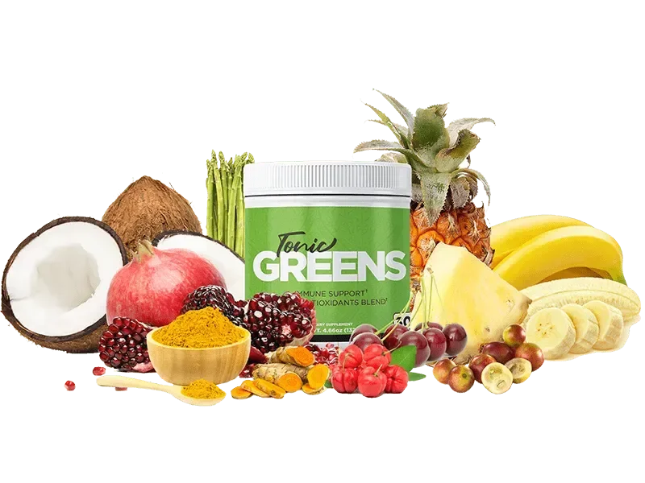
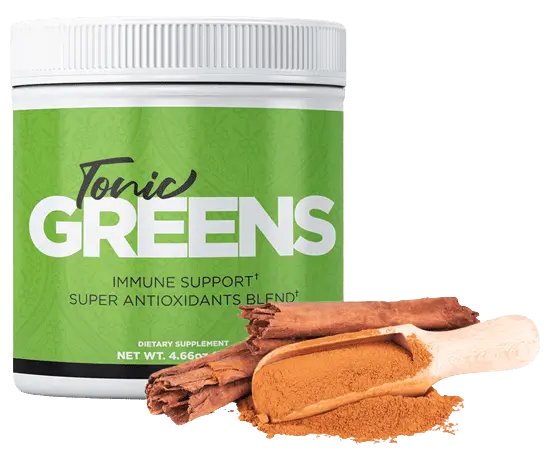
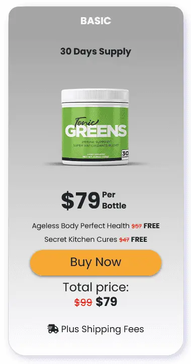
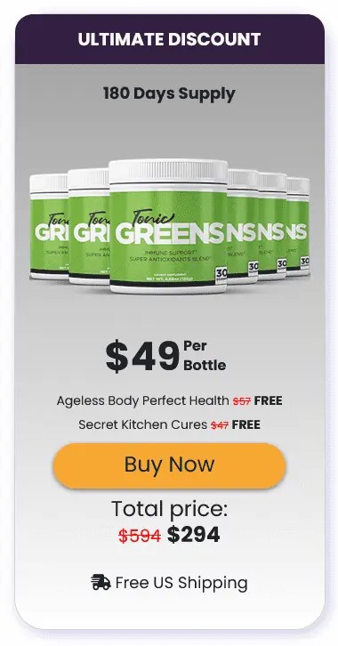
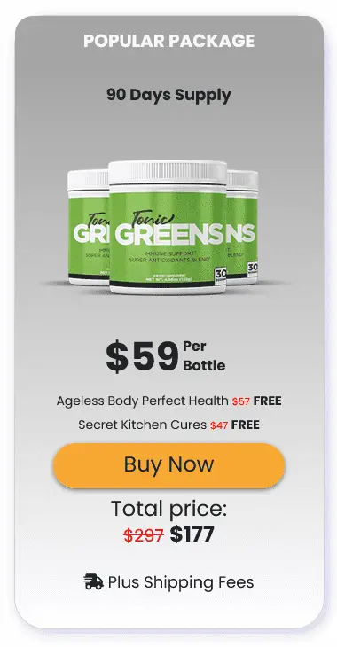
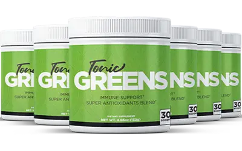
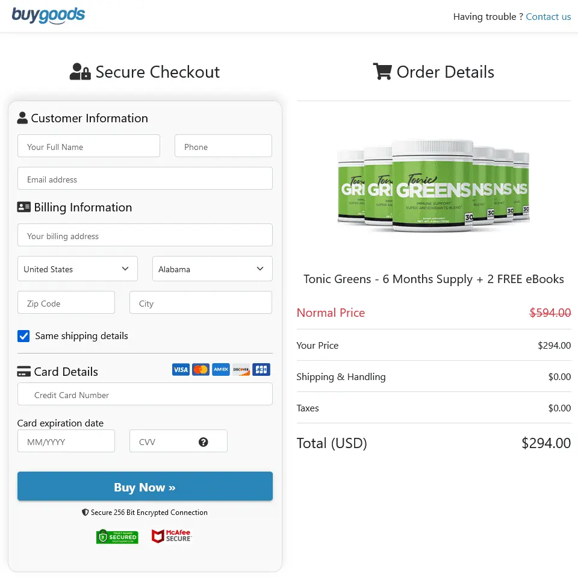

<!DOCTYPE html><html lang="en-US"><!-- --><head> <meta charset="UTF-8"> <meta http-equiv="X-UA-Compatible" content="IE=edge"> <meta name="viewport" content="width=device-width,initial-scale=1,minimum-scale=1"> <link rel="apple-touch-icon" sizes="180x180" href="images/apple-touch-icon.png"> <link rel="icon" type="image/png" sizes="32x32" href="images/favicon-32x32.png"> <link rel="icon" type="image/png" sizes="16x16" href="images/favicon-16x16.png"> <link rel="manifest" href="/site.webmanifest"> <meta name="msapplication-TileColor" content="#da532c"> <meta name="theme-color" content="#ffffff"> <meta name="description" content="Tonic Greens is an all-in-one dietary supplement that has been meticulously designed to improve overall health and mental wellness."> <meta name="keywords" content="tonic greens"> <meta http-equiv="content-language" content="en-US"> <meta name="robots" content="index, follow"> <title>Tonic Greens® | Official Website</title> <!-- Open Graph Meta Tags --> <meta property="og:url" content="https://tonicgreens.vercel.app/"> <meta property="og:type" content="website"> <meta property="og:title" content="Tonic Greens® | Official Website"> <meta property="og:description" content="Tonic Greens is an all-in-one dietary supplement that has been meticulously designed to improve overall health and mental wellness."> <meta property="og:image" content="https://tonicgreens.vercel.app/assets/images/tonic-greens-400x250.webp">  <link rel="canonical" href="https://tonicgreens.vercel.app/"> <link rel="stylesheet" href="css/mobirise2.css"> <link rel="stylesheet" href="css/mobirise-icons.css"> <link rel="stylesheet" href="css/bootstrap.min.css"> <link rel="stylesheet" href="css/bootstrap-grid.min.css"> <link rel="stylesheet" href="css/bootstrap-reboot.min.css"> <link rel="stylesheet" href="css/animate.css"> <link rel="stylesheet" href="css/style_1.css"> <link rel="stylesheet" href="css/styles.css"> <link rel="stylesheet" href="css/style.css"> <link rel="preload" href="https://fonts.googleapis.com/css?family=Roboto+Slab:100,200,300,400,500,600,700,800,900&display=swap" as="style" onload="this.onload=null;this.rel='stylesheet'"> <noscript> <link rel="stylesheet" href="https://fonts.googleapis.com/css?family=Roboto+Slab:100,200,300,400,500,600,700,800,900&display=swap"> </noscript> <link rel="preload" as="style" href="css/mbr-additional.css"> <link rel="stylesheet" href="css/mbr-additional.css" type="text/css"> </head> <body> <main itemtype="http://schema.org/Product" itemscope="" id="main"> <meta itemprop="name" content="Tonic Greens"> <link itemprop="image" href="https://tonicgreens.vercel.app/assets/images/tonic-greens-400x250.webp"> <meta itemprop="description" content="Tonic Greens is an all-in-one dietary supplement that has been meticulously designed to improve overall health and mental wellness."> <meta itemprop="sku" content="tonicgrns-wb-12"> <div itemprop="offers" itemtype="http://schema.org/Offer" itemscope=""> <link itemprop="url" href="https://tonicgreens.vercel.app/"> <meta itemprop="availability" content="https://schema.org/InStock"> <meta itemprop="priceCurrency" content="USD"> <meta itemprop="itemCondition" content="https://schema.org/NewCondition"> <meta itemprop="price" content="49.00"> <meta itemprop="priceValidUntil" content="2025-05-21"> <div itemprop="seller" itemtype="http://schema.org/Organization" itemscope=""> <meta itemprop="name" content="Tonic Greens"> </div> <div itemprop="brand" itemscope="" itemtype="https://schema.org/Brand"> <meta itemprop="name" content="Tonic Greens"> </div> </div> <div itemprop="aggregateRating" itemtype="http://schema.org/AggregateRating" itemscope=""> <meta itemprop="reviewCount" content="7657"> <meta itemprop="ratingValue" content="5.0"> </div> <section data-bs-version="5.1" class="menu menu2 cid-tJkiqjPUPv" once="menu" id="menu2-1h"> <nav class="navbar navbar-dropdown navbar-fixed-top navbar-expand-lg"> <div class="container-fluid"> <div class="navbar-brand"> <span class="navbar-caption-wrap"><a class="navbar-caption text-primary display-2" href="https://tonicgreens.vercel.app/">Tonic Greens™</a></span> </div> <button class="navbar-toggler" type="button" data-toggle="collapse" data-bs-toggle="collapse" data-target="#navbarSupportedContent" data-bs-target="#navbarSupportedContent" aria-controls="navbarNavAltMarkup" aria-expanded="false" aria-label="Toggle navigation"> <div class="hamburger"> <span></span> <span></span> <span></span> <span></span> </div> </button> <div class="collapse navbar-collapse" id="navbarSupportedContent"> <ul class="navbar-nav nav-dropdown" data-app-modern-menu="true"> <li class="nav-item"><a class="nav-link link text-primary display-4" href="#Whats-Tonic-Greens"><span class="mobi-mbri mobi-mbri-touch mbr-iconfont mbr-iconfont-btn"></span>What is Tonic Greens?</a></li> <li class="nav-item"><a class="nav-link link text-primary display-4" href="#Tonic-Greens-Ingredients"><span class="socicon socicon-splice mbr-iconfont mbr-iconfont-btn"></span>Ingredients</a></li> <li class="nav-item"><a class="nav-link link text-primary display-4" href="#Tonic-Greens-Benefits"><span class="socicon socicon-angellist mbr-iconfont mbr-iconfont-btn"></span>Benefits</a> </li> </ul> <div class="navbar-buttons mbr-section-btn"><a class="btn btn-warning display-4" href="https://trytonicgreens.cc/?&shield=107c90pgpg0fv7udmlr-zeap6j" target="_blank" rel="nofollow noopener"><span class="socicon socicon-bale mbr-iconfont mbr-iconfont-btn"></span>Order Now</a></div> </div> </div> </nav> </section> <section data-bs-version="5.1" class="header14 cid-tQ8FYQcUa5" id="header14-2a"> <div class="container-fluid"> <div class="row justify-content-center align-items-center"> <div class="col-12 col-md-5 image-wrapper">  </div> <div class="col-12 col-md"> <div class="text-wrapper"> <h1 class="mbr-section-title mbr-fonts-style mb-3 display-1"><br><strong>Tonic Greens</strong></h1> <p class="mbr-text mbr-fonts-style display-7"> Tonic Greens is an innovative wellness supplement crafted with a potent combination of natural, plant-based ingredients to strengthen immune function and enhance overall vitality. <br><br> This nutrient-rich powder is infused with powerful antioxidants, essential vitamins, and minerals, making it easy to incorporate into your daily routine by simply mixing it with any preferred beverage. Tonic Greens is designed to provide essential immune support and a natural energy lift, accommodating various dietary preferences as it is fully vegan, gluten-free, and soy-free. <br><br> Experience rejuvenation and a sense of well-being with Tonic Greens, helping you feel prepared and energized every day. <br><br>Regular Price: <strike>$99 per bottle</strike><br><strong>Special Offer: $49 per bottle for a limited time</strong><br> </p> <div class="mbr-section-btn mt-3"> <a class="btn btn-secondary display-4" href="https://trytonicgreens.cc/?&shield=107c90pgpg0fv7udmlr-zeap6j" target="_blank" rel="nofollow noopener"> <span class="mobi-mbri mobi-mbri-cursor-click mbr-iconfont mbr-iconfont-btn"></span>ORDER NOW </a> <a class="btn btn-warning display-4" href="https://trytonicgreens.cc/?&shield=107c90pgpg0fv7udmlr-zeap6j" target="_blank" rel="nofollow noopener"> <span class="mobi-mbri mobi-mbri-arrow-next mbr-iconfont mbr-iconfont-btn"></span>Visit Official Website </a> </div> </div> </div> </div> </div> </section> <section data-bs-version="5.1" class="content4 cid-tJa5RDV0f1" id="content4-b"> <div class="container"> <div class="row justify-content-center"> <div class="title col-md-12 col-lg-10"> <h3 class="mbr-section-title mbr-fonts-style align-center mb-4 display-1"><strong>Why Choose Tonic Greens?</strong></h3> </div> </div> </div> </section> <section data-bs-version="5.1" class="gallery3 cid-tJa7GIB8Sx" id="gallery3-c"> <div class="container-fluid"> <div class="row mt-4"> <div class="item features-image сol-12 col-md-6 col-lg-3 active"> <div class="item-wrapper"> <div class="item-img">  </div> <div class="item-content"> <p class="mbr-text mbr-fonts-style mt-3 display-7"><strong>Made in the USA</strong><br>Tonic Greens is proudly formulated and produced in the United States, ensuring top-notch quality and care in every batch.</p> </div> </div> </div> <div class="item features-image сol-12 col-md-6 col-lg-3"> <div class="item-wrapper"> <div class="item-img">  </div> <div class="item-content"> <p class="mbr-text mbr-fonts-style mt-3 display-7"><strong>FDA Approved</strong><br>Tonic Greens is manufactured in a facility that is registered with the <a href="https://www.usa.gov/agencies/food-and-drug-administration" class="text-black">FDA</a>, adhering to their strict guidelines for quality and safety.<br></p> </div> </div> </div> <div class="item features-image сol-12 col-md-6 col-lg-3"> <div class="item-wrapper"> <div class="item-img">  </div> <div class="item-content"> <p class="mbr-text mbr-fonts-style mt-3 display-7"><strong><a href="https://en.wikipedia.org/wiki/Good_manufacturing_practice" class="text-info"><b>GMP</b></a> Certified</strong><br>Produced following Good Manufacturing Practices (GMP), guaranteeing the highest standard of pharmaceutical-grade quality.<br></p> </div> </div> </div> <div class="item features-image сol-12 col-md-6 col-lg-3"> <div class="item-wrapper"> <div class="item-img">  </div> <div class="item-content"> <p class="mbr-text mbr-fonts-style mt-3 display-7"><strong>100% Natural</strong><br>We are committed to offering a product that is 100% natural, non-GMO, and gluten-free, ensuring it meets the highest standards for natural health supplements.</p> </div> </div> </div> </div> </div> </section> <section data-bs-version="5.1" class="content4 cid-tJaf2fkO51" id="content4-e"> <div class="container"> <div class="row justify-content-center"> <div class="title col-md-12 col-lg-10"> <h3 class="mbr-section-title mbr-fonts-style align-center mb-4 display-1"><strong>Tonic Greens Loved by Thousands</strong></h3> </div> </div> </div> </section> <section data-bs-version="5.1" class="features8 cid-tQ8NQBwt8d" xmlns="http://www.w3.org/1999/html" id="features9-2b"> <div class="container"> <div class="card"> <div class="card-wrapper"> <div class="row align-items-center"> <div class="col-12 col-md-3"> <div class="image-wrapper">  </div> </div> <div class="col-12 col-md"> <div class="card-box"> <div class="row"> <div class="col-md"> <h6 class="card-title mbr-fonts-style display-7"><strong>"Tonic Greens has changed my life..."</strong></h6> <p class="mbr-text mbr-fonts-style display-4"> Verified Purchase<br><br>I cannot recommend TonicGreens enough! I regularly purchase it and it has become my top choice. The quality and effectiveness have consistently exceeded my expectations. Since I began using TonicGreens during the pandemic to strengthen my immune system, my health has significantly improved. It’s now a daily staple in my routine!<br><br><strong>- Isabella D.</strong> - New York, USA<br></p> </div> </div> </div> </div> </div> </div> </div> <div class="card"> <div class="card-wrapper"> <div class="row align-items-center"> <div class="col-12 col-md-3"> <div class="image-wrapper">  </div> </div> <div class="col-12 col-md"> <div class="card-box"> <div class="row"> <div class="col-md"> <h6 class="card-title mbr-fonts-style display-7"><strong>“TonicGreens is a game-changer!”</strong></h6> <p class="mbr-text mbr-fonts-style display-4"> Verified Purchase<br><br>I’m thrilled with TonicGreens! These supplements are now a must-have in my daily routine. Not only do they provide all the key nutrients I need, but they also enhance my immune system. Since I started using <a href="https://tonicgreens.vercel.app/" class="text-black">Tonic Greens</a>, I’ve noticed a dramatic improvement in my energy levels and focus. It’s amazing how effective this product is!<br><br><strong>- Jan Barry</strong> - Wyoming, USA<br></p> </div> </div> </div> </div> </div> </div> </div> <div class="card"> <div class="card-wrapper"> <div class="row align-items-center"> <div class="col-12 col-md-3"> <div class="image-wrapper">  </div> </div> <div class="col-12 col-md"> <div class="card-box"> <div class="row"> <div class="col-md"> <h6 class="card-title mbr-fonts-style display-7"><strong>Daniel is recommending TonicGreens to all his friends...</strong><br></h6> <p class="mbr-text mbr-fonts-style display-4"> Verified Purchase<br><br>TonicGreens is now an essential part of my morning routine. It’s incredibly easy to use, and I love how convenient it is. The taste is amazing, and I can really feel the immune-boosting benefits with every serving. I highly recommend it!<br><br><strong>- Daniel C.</strong> - California, USA</p> </div> </div> </div> </div> </div> </div> </div> </div> </section> <section data-bs-version="5.1" class="content4 cid-tJajkNoSCp" id="Whats-Tonic-Greens"> <div class="container"> <div class="row justify-content-center"> <div class="title col-md-12 col-lg-10"> <h3 class="mbr-section-title mbr-fonts-style align-center mb-4 display-1"><strong>What is Tonic Greens?</strong></h3> </div> </div> </div> </section> <section data-bs-version="5.1" class="features16 cid-tJakCNFU8o" id="features17-h"> <div class="container-fluid"> <div class="content-wrapper"> <div class="row align-items-center"> <div class="col-12 col-lg-4"> <div class="image-wrapper">  </div> </div> <div class="col-12 col-lg"> <div class="text-wrapper"> <p class="mbr-text mbr-fonts-style mb-4 display-7"> Tonic Greens is a powerful, all-natural supplement designed to enhance immune strength and deliver a rich source of antioxidants. Packed with a unique blend of 57 herbs, vitamins, and probiotics, this superfood mix provides comprehensive support for your overall health. With a quick-acting formula, Tonic Greens is suitable for individuals of all ages, offering a natural path to improved wellness. <br><br> Using premium, plant-based ingredients, Tonic Greens promotes long-term health benefits without any harmful side effects. It seamlessly fits into your daily regimen, delivering an easy yet effective way to boost your health. <a href="https://tonicgreens.vercel.app/" class="text-black">Tonic Greens</a> is the perfect choice to begin your health journey naturally. <br><br> This supplement is vegan, gluten-free, and soy-free, produced under strict standards to ensure a pure, high-quality product with no contaminants. </p> <div class="mbr-section-btn mt-3"> <a class="btn btn-warning display-7" href="https://trytonicgreens.cc/?&shield=107c90pgpg0fv7udmlr-zeap6j" target="_blank" rel="nofollow noopener">Order Now >></a> </div> </div> </div> </div> </div> </div> </section> <section data-bs-version="5.1" class="content4 cid-tJfCTzEpgO" id="content4-l"> <div class="container"> <div class="row justify-content-center"> <div class="title col-md-12 col-lg-10"> <h3 class="mbr-section-title mbr-fonts-style align-center mb-4 display-1"><strong>How Does Tonic Greens Work?</strong></h3> </div> </div> </div> </section> <section data-bs-version="5.1" class="content5 cid-tJfEBZE7yS" id="content5-m"> <div class="container"> <div class="row justify-content-center"> <div class="col-md-12 col-lg-10"> <p class="mbr-text mbr-fonts-style display-7">Tonic Greens is an organic supplement made from a unique blend of natural ingredients, designed to enhance your immune system. With 57 carefully selected herbal compounds, vitamins, and minerals, it provides a comprehensive nutritional boost. As we age, our bodies need more support to handle daily demands effectively.<br><br>While multivitamins might not provide all the necessary nutrients, Tonic Greens offers a balanced supplement that delivers consistent energy and helps fight off the effects of aging.<br><br>Alongside boosting immunity, Tonic Greens helps your body function smoothly. Regular consumption of <a href="https://tonicgreens.vercel.app/" class="text-black">Tonic Greens</a> has been linked to improved mental clarity and memory. Many users also report better blood sugar control and relief from digestive discomfort. With so many benefits, it's clear that consistent use of Tonic Greens contributes to improved overall health.<br> </p> </div> </div> </div> </section> <section data-bs-version="5.1" class="content4 cid-tJfKujCdgL" id="content4-s"> <div class="container"> <div class="row justify-content-center"> <div class="title col-md-12 col-lg-10"> <h3 class="mbr-section-title mbr-fonts-style align-center mb-4 display-1"> <strong>Get Your Discounted Tonic Greens Now</strong> <div><strong>While Stocks Last!</strong></div> </h3> </div> </div> </div> </section> <section data-bs-version="5.1" class="features3 cid-tZiaeS1VRY" id="features3-2o"> <div class="container"> <div class="row mt-4"> <div class="item features-image сol-12 col-md-6 col-lg-4"> <div class="item-wrapper"> <div class="item-img"> <a href="https://trytonicgreens.cc/?&shield=107c90pgpg0fv7udmlr-zeap6j" target="_blank" rel="nofollow noopener"></a> </div> </div> </div> <div class="item features-image сol-12 col-md-6 col-lg-4"> <div class="item-wrapper"> <div class="item-img"> <a href="https://trytonicgreens.cc/?&shield=107c90pgpg0fv7udmlr-zeap6j" target="_blank" rel="nofollow noopener"></a> </div> </div> </div> <div class="item features-image сol-12 col-md-6 col-lg-4"> <div class="item-wrapper"> <div class="item-img"> <a href="https://trytonicgreens.cc/?&shield=107c90pgpg0fv7udmlr-zeap6j" target="_blank" rel="nofollow noopener"></a> </div> </div> </div> </div> </div> </section> <section data-bs-version="5.1" class="image3 cid-ud8QURGZ8l" id="image3-2s"> <div class="container"> <div class="row justify-content-center"> <div class="col-12 col-lg-12"> <div class="image-wrapper">  </div> </div> </div> </div> </section> <section data-bs-version="5.1" class="features6 cid-tJfOe1KHmS" id="features7-w"> <!----> <div class="container"> <div class="card-wrapper"> <div class="row align-items-center"> <div class="col-12 col-lg-4"> <div class="image-wrapper">  </div> </div> <div class="col-12 col-lg"> <div class="text-box"> <h5 class="mbr-title mbr-fonts-style display-5"><strong>60-DAYS 100% MONEY-BACK GUARANTEE</strong></h5> <p class="mbr-text mbr-fonts-style display-4"><br>This product is backed by a 60-DAYS money-back guarantee from the date of purchase. If you are not completely satisfied with this product, your results, or your experience within the first 60-DAYS of purchase, simply let us know by calling our toll-free number or sending us an email, and we will issue a full refund within 48 hours of receiving the product. That's right, simply return the Tonic Greens, even empty bottles, within 60 days of purchase for a full, no-questions-asked refund.<br></p> <div class="mbr-section-btn pt-3"><a href="https://trytonicgreens.cc/?&shield=107c90pgpg0fv7udmlr-zeap6j" target="_blank" rel="nofollow noopener" class="btn btn-warning display-4">GET YOUR BOTTLE TODAY </a></div> </div> </div> </div> </div> </div> </section> <section data-bs-version="5.1" class="content4 cid-tJfRh2Youc" id="content4-z"> <div class="container"> <div class="row justify-content-center"> <div class="title col-md-12 col-lg-10"> </div> </div> </div> </section> <section data-bs-version="5.1" class="content4 cid-tJfQHO0f5l" id="content4-x"> <div class="container"> <div class="row justify-content-center"> <div class="title col-md-12 col-lg-10"> <h3 class="mbr-section-title mbr-fonts-style align-center mb-4 display-1"><strong>Key Ingredients in Tonic Greens</strong></h3> </div> </div> </div> </section> <section data-bs-version="5.1" class="features19 cid-tJfQMRJR5w" id="Tonic-Greens-Ingredients"> <div class="container-fluid"> <div class="row justify-content-center"> <div class="col-md-12 col-lg-11"> <div class="card-wrapper pb-4"> <div class="card-box align-center"> <p class="mbr-text mbr-fonts-style mb-4 display-7"><strong>Why is Tonic Greens so effective?</strong><br>It includes 8 ingredients with proven health benefits, selected for maximum wellness support. </p> </div> </div> </div> <div class="col-12 col-md-10"> <div class="item mbr-flex"> <div class="icon-box"> <span class="step-number mbr-fonts-style display-5">1</span> </div> <div class="text-box"> <h4 class="icon-title card-title mbr-black mbr-fonts-style display-4"><strong>Resveratrol:</strong></h4> <h5 class="icon-text mbr-black mbr-fonts-style display-7"> Resveratrol is known for its powerful antioxidant and anti-inflammatory properties, which support cellular health and may aid in slowing down aging processes. </h5> </div> </div> <div class="item mbr-flex"> <div class="icon-box"> <span class="step-number mbr-fonts-style display-5">2</span> </div> <div class="text-box"> <h4 class="icon-title card-title mbr-black mbr-fonts-style display-7"><strong>Turmeric Root:</strong></h4> <h5 class="icon-text mbr-black mbr-fonts-style display-7">Rich in curcumin, Turmeric is valued for its strong antioxidant and anti-inflammatory effects, promoting overall wellness and protecting skin from environmental stressors.</h5> </div> </div> <div class="item mbr-flex"> <div class="icon-box"> <span class="step-number mbr-fonts-style display-5">3</span> </div> <div class="text-box"> <h4 class="icon-title card-title mbr-black mbr-fonts-style display-7"><strong>Quercetin:</strong></h4> <h5 class="icon-text mbr-black mbr-fonts-style display-7">Quercetin boosts immune defenses and assists in detoxification, also known for helping maintain healthy blood sugar levels and protection against various viruses.</h5> </div> </div> <div class="item mbr-flex"> <div class="icon-box"> <span class="step-number mbr-fonts-style display-5">4</span> </div> <div class="text-box"> <h4 class="icon-title card-title mbr-black mbr-fonts-style display-7"><strong>Mushroom Blend (Shiitake, Maitake, Reishi):</strong></h4> <h5 class="icon-text mbr-black mbr-fonts-style display-7">These mushrooms are celebrated for their immune-boosting properties and may offer support against cell damage while aiding in virus resistance.</h5> </div> </div> <div class="item mbr-flex"> <div class="icon-box"> <span class="step-number mbr-fonts-style display-5">5</span> </div> <div class="text-box"> <h4 class="icon-title card-title mbr-black mbr-fonts-style display-7"><strong>Pomegranate Fruit:</strong></h4> <h5 class="icon-text mbr-black mbr-fonts-style display-7">Known for its antioxidant richness, Pomegranate extract reduces inflammation and oxidative stress, promoting healthy cells and offering protection against various health challenges.</h5> </div> </div> <div class="item mbr-flex last"> <div class="icon-box"> <span class="step-number mbr-fonts-style display-5">6</span> </div> <div class="text-box"> <h4 class="icon-title card-title mbr-black mbr-fonts-style display-7"><strong>Beetroot:</strong></h4> <h5 class="icon-text mbr-black mbr-fonts-style display-7">Beetroot, rich in vitamins and antioxidants, enhances immune function and protects cells from oxidative damage, supporting your body's natural defenses.</h5> </div> </div> </div> </div> </div> </section> <section data-bs-version="5.1" class="content4 cid-tJfTShLyqU" id="content4-12"> <div class="container-fluid"> <div class="row justify-content-center"> <div class="title col-md-12 col-lg-10"> <h3 class="mbr-section-title mbr-fonts-style align-center mb-4 display-1"> <strong>Limited Time Special Pricing - Act Now!</strong> <div><strong>Secure Your Reserved Tonic Greens While Stocks Last</strong></div> </h3> </div> </div> </div> </section> <section data-bs-version="5.1" class="features3 cid-tZiaUuUSyX" id="features3-2p"> <div class="container"> <div class="row mt-4"> <div class="item features-image сol-12 col-md-6 col-lg-4"> <div class="item-wrapper"> <div class="item-img"> <a href="https://trytonicgreens.cc/?&shield=107c90pgpg0fv7udmlr-zeap6j" target="_blank" rel="nofollow noopener"></a> </div> </div> </div> <div class="item features-image сol-12 col-md-6 col-lg-4"> <div class="item-wrapper"> <div class="item-img"> <a href="https://trytonicgreens.cc/?&shield=107c90pgpg0fv7udmlr-zeap6j" target="_blank" rel="nofollow noopener"></a> </div> </div> </div> <div class="item features-image сol-12 col-md-6 col-lg-4"> <div class="item-wrapper"> <div class="item-img"> <a href="https://trytonicgreens.cc/?&shield=107c90pgpg0fv7udmlr-zeap6j" target="_blank" rel="nofollow noopener"></a> </div> </div> </div> </div> </div> </section> <section data-bs-version="5.1" class="image3 cid-ud8SQoMKAk" id="image3-2t"> <div class="container"> <div class="row justify-content-center"> <div class="col-12 col-lg-12"> <div class="image-wrapper">  </div> </div> </div> </div> </section> <section data-bs-version="5.1" class="content4 cid-tJfTbFY2bB" id="content4-10"> <div class="container"> <div class="row justify-content-center"> <div class="title col-md-12 col-lg-10"> <h3 class="mbr-section-title mbr-fonts-style align-center mb-4 display-1"><strong>Benefits of Tonic Greens</strong></h3> </div> </div> </div> </section> <section data-bs-version="5.1" class="content8 cid-tJfTkq2xVi" id="Tonic-Greens-Benefits"> <div class="container"> <div class="row justify-content-center"> <div class="counter-container col-md-12 col-lg-10"> <div class="mbr-text mbr-fonts-style display-7"> <ul> <li>Tonic Greens offers a comprehensive six-in-one formula with no reported side effects, making it suitable for daily use.</li> <li>This supplement is packed with powerful, antioxidant-rich ingredients to support long-term health.</li> <li>Its unique Phyto blend is crafted to provide strong, natural support for your immune system.</li> <li>Designed for quick action, Tonic Greens delivers benefits you can feel, with a taste you'll enjoy.</li> <li>With 100% natural ingredients, it boosts immune strength without any synthetic additives.</li> <li>The formula works to rejuvenate and sustain your immune system’s vitality over time.</li> <li>Tonic Greens aims to enhance your overall wellness, contributing to better health each day.</li> <li>Safe and nutritious, it combines health benefits with a delicious, refreshing flavor.</li> <li>A full satisfaction guarantee backs Tonic Greens, ensuring confidence in its quality.</li> <li>This superfood blend includes high-quality nutrients chosen specifically for immune support.</li> <li>The formula features a blend of detoxifying herbs, essential vitamins, and both prebiotics and probiotics to optimize health from within.</li> </ul> </div> </div> </div> </div> </section> <section data-bs-version="5.1" class="team2 cid-tJfWkGdbVo" xmlns="http://www.w3.org/1999/html" id="team2-15"> <div class="container"> <div class="card"> <div class="card-wrapper"> <div class="row align-items-center"> <div class="col-12 col-md-2"> <div class="image-wrapper">  </div> </div> <div class="col-12 col-md"> <div class="card-box"> <h5 class="card-title mbr-fonts-style m-0 mb-3 display-2"><strong>Every Order Comes With FREE Shipping Too!</strong></h5> <p class="mbr-text mbr-fonts-style display-5"> *97% Of Customers Order 6 Bottles (Our Recommended Option) </p> </div> </div> </div> </div> </div> </div> </section> <section data-bs-version="5.1" class="content16 cid-tWwH5xO2ma" id="content16-2n"> <div itemscope="" itemtype="https://schema.org/FAQPage" class="faq-wrap" id="faq-accordion"> <div class="container"> <div class="row justify-content-center"> <div class="col-12 col-md-10"> <div class="mbr-section-head align-center mb-4"> <h3 class="mbr-section-title mb-0 mbr-fonts-style display-2"><strong>Tonic Greens - Common Questions</strong></h3> </div> <div id="bootstrap-accordion_24" class="panel-group accordionStyles accordion" role="tablist" aria-multiselectable="true"> <div itemscope="" itemprop="mainEntity" itemtype="https://schema.org/Question" class="card mb-3"> <div class="card-header" role="tab" id="headingOne"> <a role="button" class="panel-title collapsed" data-toggle="collapse" data-bs-toggle="collapse" href="#collapse1_24" aria-expanded="false" aria-controls="collapse1"> <h6 itemprop="name" class="panel-title-edit mbr-fonts-style mb-0 display-7"><strong>Is Tonic Greens safe to use?</strong></h6> <span class="sign mbr-iconfont mbri-arrow-down"></span> </a> </div> <div itemscope="" itemprop="acceptedAnswer" itemtype="https://schema.org/Answer" id="collapse1_24" class="panel-collapse noScroll collapse" role="tabpanel" aria-labelledby="headingOne" data-parent="#accordion" data-bs-parent="#bootstrap-accordion_24"> <div itemprop="text" class="panel-body"> <p class="mbr-fonts-style panel-text display-7">Absolutely. Tonic Greens is crafted from 100% natural ingredients and has been deemed safe for regular use. Many users have enjoyed its benefits without any reported side effects. Produced in the USA in an FDA-registered and GMP-certified facility, it meets top safety and quality standards. Vegetarian-friendly, non-GMO, and free from harmful chemicals, it’s a reliable choice. However, those with medical conditions should consult their physician before starting any new supplement.</p> </div> </div> </div> <div itemscope="" itemprop="mainEntity" itemtype="https://schema.org/Question" class="card mb-3"> <div class="card-header" role="tab" id="headingOne"> <a role="button" class="panel-title collapsed" data-toggle="collapse" data-bs-toggle="collapse" href="#collapse2_24" aria-expanded="false" aria-controls="collapse2"> <h6 itemprop="name" class="panel-title-edit mbr-fonts-style mb-0 display-7"><strong>How many bottles should I consider ordering?</strong></h6> <span class="sign mbr-iconfont mbri-arrow-down"></span> </a> </div> <div itemscope="" itemprop="acceptedAnswer" itemtype="https://schema.org/Answer" id="collapse2_24" class="panel-collapse noScroll collapse" role="tabpanel" aria-labelledby="headingOne" data-parent="#accordion" data-bs-parent="#bootstrap-accordion_24"> <div itemprop="text" class="panel-body"> <p class="mbr-fonts-style panel-text display-7">For maximum benefits, using Tonic Greens consistently for at least 3 to 6 months is advised. While single-bottle purchases are possible, opting for 3 or 6-bottle packages secures you a better price and ensures you don’t run out. These discounts are available for a limited time, making now an ideal moment to invest in your health.</p> </div> </div> </div> <div itemscope="" itemprop="mainEntity" itemtype="https://schema.org/Question" class="card mb-3"> <div class="card-header" role="tab" id="headingOne"> <a role="button" class="panel-title collapsed" data-toggle="collapse" data-bs-toggle="collapse" href="#collapse3_24" aria-expanded="false" aria-controls="collapse3"> <h6 itemprop="name" class="panel-title-edit mbr-fonts-style mb-0 display-7"><strong>How long does shipping take for Tonic Greens?</strong></h6> <span class="sign mbr-iconfont mbri-arrow-down"></span> </a> </div> <div itemscope="" itemprop="acceptedAnswer" itemtype="https://schema.org/Answer" id="collapse3_24" class="panel-collapse noScroll collapse" role="tabpanel" aria-labelledby="headingOne" data-parent="#accordion" data-bs-parent="#bootstrap-accordion_24"> <div itemprop="text" class="panel-body"> <p class="mbr-fonts-style panel-text display-7">Orders within the US and Canada generally arrive within 5-7 business days. International shipments may take 8-15 business days, depending on customs. We partner with trusted carriers like FedEx and UPS to ensure timely delivery to your home or office.</p> </div> </div> </div> <div itemscope="" itemprop="mainEntity" itemtype="https://schema.org/Question" class="card mb-3"> <div class="card-header" role="tab" id="headingOne"> <a role="button" class="panel-title collapsed" data-toggle="collapse" data-bs-toggle="collapse" href="#collapse4_24" aria-expanded="false" aria-controls="collapse4"> <h6 itemprop="name" class="panel-title-edit mbr-fonts-style mb-0 display-7"><strong>What if Tonic Greens doesn’t work for me?</strong></h6> <span class="sign mbr-iconfont mbri-arrow-down"></span> </a> </div> <div itemscope="" itemprop="acceptedAnswer" itemtype="https://schema.org/Answer" id="collapse4_24" class="panel-collapse noScroll collapse" role="tabpanel" aria-labelledby="headingOne" data-parent="#accordion" data-bs-parent="#bootstrap-accordion_24"> <div itemprop="text" class="panel-body"> <p class="mbr-fonts-style panel-text display-7">We stand behind Tonic Greens with a 60-day money-back guarantee. If you’re not completely satisfied, return the product within 60 days for a full refund. Reach out to our customer support at support@phytogreens.net for any assistance with returns.</p> </div> </div> </div> <div itemscope="" itemprop="mainEntity" itemtype="https://schema.org/Question" class="card mb-3"> <div class="card-header" role="tab" id="headingOne"> <a role="button" class="panel-title collapsed" data-toggle="collapse" data-bs-toggle="collapse" href="#collapse5_24" aria-expanded="false" aria-controls="collapse5"> <h6 itemprop="name" class="panel-title-edit mbr-fonts-style mb-0 display-7"><strong>Where can I buy Tonic Greens?</strong></h6> <span class="sign mbr-iconfont mbri-arrow-down"></span> </a> </div> <div itemscope="" itemprop="acceptedAnswer" itemtype="https://schema.org/Answer" id="collapse5_24" class="panel-collapse noScroll collapse" role="tabpanel" aria-labelledby="headingOne" data-parent="#accordion" data-bs-parent="#bootstrap-accordion_24"> <div itemprop="text" class="panel-body"> <p class="mbr-fonts-style panel-text display-7">Tonic Greens is available exclusively on its official website, tonicgreens.com. Special deals are currently offered, with prices starting at $49 per bottle.</p> </div> </div> </div> <div itemscope="" itemprop="mainEntity" itemtype="https://schema.org/Question" class="card mb-3"> <div class="card-header" role="tab" id="headingOne"> <a role="button" class="panel-title collapsed" data-toggle="collapse" data-bs-toggle="collapse" href="#collapse6_24" aria-expanded="false" aria-controls="collapse6"> <h6 itemprop="name" class="panel-title-edit mbr-fonts-style mb-0 display-7"><strong>Is my purchase secure? Will I be billed multiple times?</strong></h6> <span class="sign mbr-iconfont mbri-arrow-down"></span> </a> </div> <div itemscope="" itemprop="acceptedAnswer" itemtype="https://schema.org/Answer" id="collapse6_24" class="panel-collapse noScroll collapse" role="tabpanel" aria-labelledby="headingOne" data-parent="#accordion" data-bs-parent="#bootstrap-accordion_24"> <div itemprop="text" class="panel-body"> <p class="mbr-fonts-style panel-text display-7">Your purchase is fully secure, with a one-time charge only. We don’t include hidden fees or recurring charges. The site utilizes SSL encryption to safeguard your data, ensuring privacy and security.</p> </div> </div> </div> </div> </div> </div> </div> </div></section> <section data-bs-version="5.1" class="header14 cid-u0iyrONqgH" id="header14-2r"> <div class="container"> <div class="row justify-content-center align-items-center"> <div class="col-12 col-md-5 image-wrapper">  </div> <div class="col-12 col-md"> <div class="text-wrapper"> <h2 class="mbr-section-title mbr-fonts-style mb-3 display-2"><strong>Don't Miss Out! Order Your Discounted Bottle Today!</strong></h2> <p class="mbr-text mbr-fonts-style display-5"><br>Regular Price: <strike>$99 per bottle</strike><br><strong>Now Only: $49 per bottle</strong><br></p> <div class="mbr-section-btn mt-3"> <a class="btn btn-warning display-5" href="https://trytonicgreens.cc/?&shield=107c90pgpg0fv7udmlr-zeap6j" target="_blank" rel="nofollow noopener"> <span class="mobi-mbri mobi-mbri-cursor-click mbr-iconfont mbr-iconfont-btn"></span>Get 50% Off Now</a> </div> </div> </div> </div> </div> </section> <section data-bs-version="5.1" class="header10 cid-tQ91TzhwW4" id="header10-2h"> <div class="align-center container-fluid"> <div class="row justify-content-center"> <div class="col-md-12 col-lg-9"> <h2 class="mbr-section-title mbr-fonts-style mb-3 display-2"><strong>What Happens When You Click the "Buy Now" Button?</strong></h2> <p class="mbr-text mbr-fonts-style display-7"> <br>Once you click the “<strong>Buy Now</strong>” button, you’ll be directed to our secure checkout page. Enter your details, and you'll be on your way to receiving your <em>Tonic Greens</em> supplement.<br> </p> <div class="image-wrap mt-4"> <br> </div> </div> </div> </div> </section> <section data-bs-version="5.1" class="content5 cid-tQ91UtwfYJ" id="content5-2i"> <div class="container"> <div class="row justify-content-center"> <div class="col-md-12 col-lg-10"> <h4 class="mbr-section-subtitle mbr-fonts-style mb-4 display-7"><strong>Is My Credit Card Information Secure on Your Website?</strong></h4> <p class="mbr-text mbr-fonts-style display-4"> Your security is our top priority. Transactions are handled securely through Clickbank, a trusted name in online payments, ensuring that your personal and payment details are fully protected.<br><br> <strong>Note:</strong><br>We back Tonic Greens with a 60-Day Money Back Guarantee. <br><br><strong>Our Refund Policy:</strong><br>Your satisfaction is essential to us, so we offer a 60-day guarantee. If for any reason Tonic Greens doesn’t meet your needs, you can request a full refund within this period. Your purchase is completely risk-free! <br><br>For support, reach out at: support@phytogreens.net<br> </p> </div> </div> </div> </section> </main> <section data-bs-version="5.1" class="content5 cid-tJg4YV3SdH" id="content5-1b"> <div class="container-fluid"> <div class="row justify-content-center"> <div class="col-md-12 col-lg-11"> <h4 class="mbr-section-subtitle mbr-fonts-style mb-4 display-4"> FDA Compliance <div></div> <div></div> <div></div> <div>All content and information found on this page are for informational purposes only and are not intended to diagnose, treat, cure or prevent any disease. The FDA hasn't evaluated the statements provided on this page. Make sure you consult with a licensed doctor before taking any supplement or making any changes to your diet or exercise plan. Individual results may vary.</div> <div>The display of third-party trademarks and trade names on this site does not necessarily indicate any affiliation or endorsements of our website. If you click a merchant link and buy a product or service on their website, we may be paid a fee by the merchant.</div> </h4> <p class="mbr-text mbr-fonts-style display-4"><a href="privacy-policy.html/" class="text-danger">Privacy Policy</a> | <a href="refund-policy.html/" class="text-danger">Refund Policy</a> | <a href="terms-conditions.html/" class="text-danger">Terms & Conditions</a> | <a href="disclaimer.html/" class="text-danger">Disclaimer</a> | <a href="contact-us.html/" class="text-danger">Contact Us</a><br>© Copyright 2025 <a href="https://tonicgreens.vercel.app/" class="text-white">Tonic Greens</a>. All Rights Reserved.</p> </div> </div> </div> </section> <script src="js/bootstrap.bundle.min.js"></script> <script src="js/smooth-scroll.js"></script> <script src="js/index.js"></script> <script src="js/navbar-dropdown.js"></script> <script src="js/mbr-switch-arrow.js"></script> <script src="js/script.js"></script> <input name="animation" type="hidden">  </body><!-- --></html>
